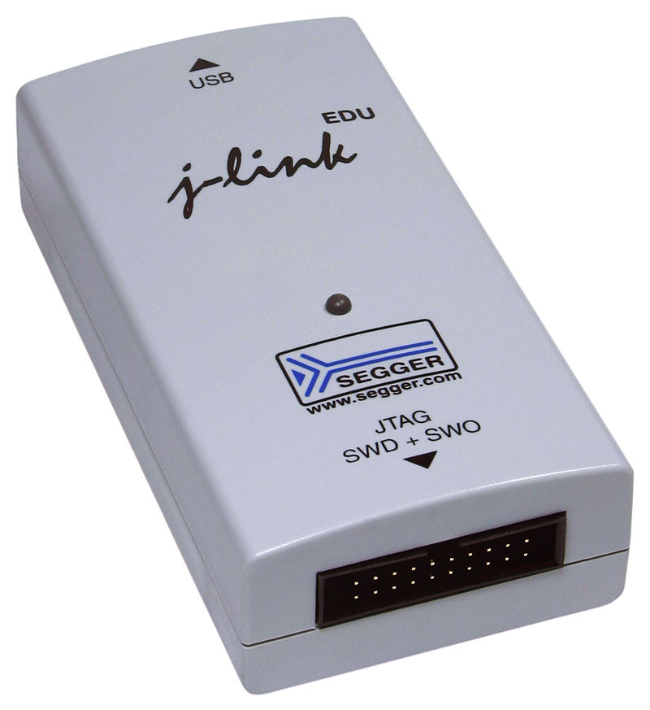

use probe_rs::Core;
let core = Core::auto_attach("nrf52")?;
// Read a single 32 bit word.
let word = core.read_word_32(0x2000_0000)?;
use probe_rs::Core;
let core = Core::auto_attach("nrf52")?;
core.reset()?;
use probe_rs::Core;
let core = Core::auto_attach("nrf52")?;
core.set_hw_breakpoint(0x1500_2000)?;